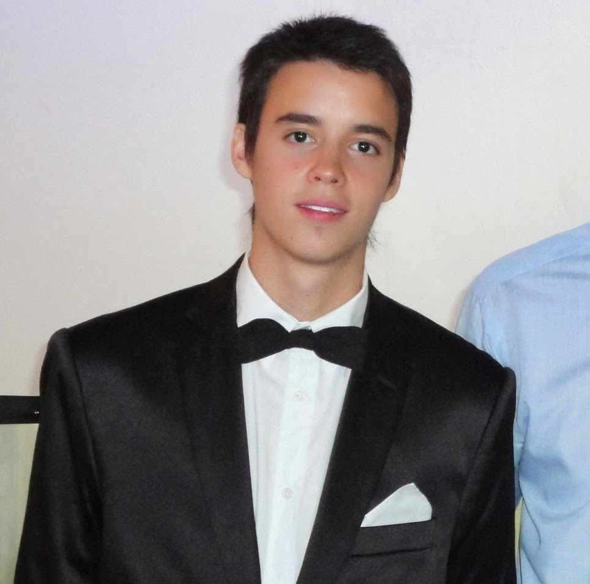

Franco Corniglione
Soy Técnico Universitario en Comunicación Social y actualmente me encuentro en proceso de tesis. Me apasiona mucho
la tecnología y todo lo vinculado al mundo de la programación y los entornos digitales, por lo que últimamente he
decidido tomar cursos en dicho campo y adquirir conocimientos y competencias específicamente en desarrollo web.
Hobbies
Disfruto mucho de la lectura, en especial la literatura de ficción, ya sean novelas o cuentos.
Además me gustan mucho los deportes y juego regularmente al fútbol y al tenis. Suelo escuchar música
rock y mirar películas dramáticas y de acción.
Henry y una oportunidad imperdible
Como estudiante y futuro Licenciado en Comunicación Social, en los últimos años he considerado necesario complementar mis
estudios con algo que he visto en muy poca profundidad y que se refiere a la parte tecnológica de la carrera en cuestión.
Debido también a los avances cada vez más grandes que se vienen dando tanto a nivel laboral como en la vida cotidiana misma,
en el último tiempo he decidido abordar el campo de la programación y el desarrollo del software, algo que es muy diferente a
lo que he venido haciendo. Por todo esto es que tomo este cambio de rumbo personal y profesional como un gran desafío a futuro,
lo que me motiva aún más a la hora de proyectar mi vida a largo plazo.